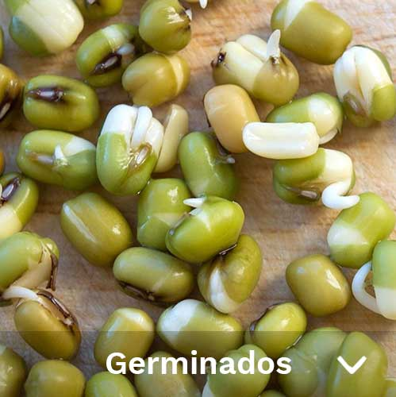
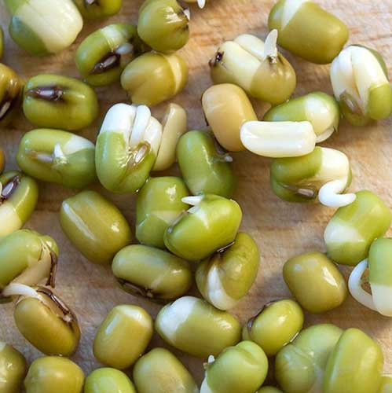
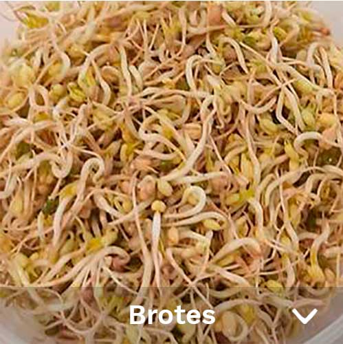
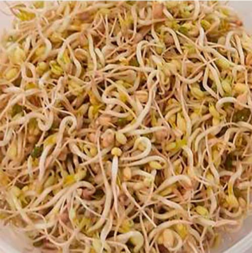
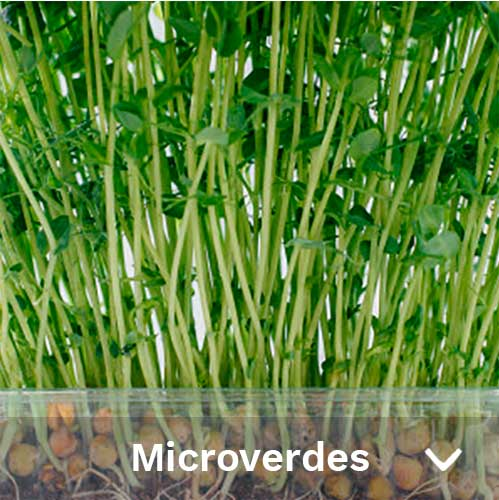
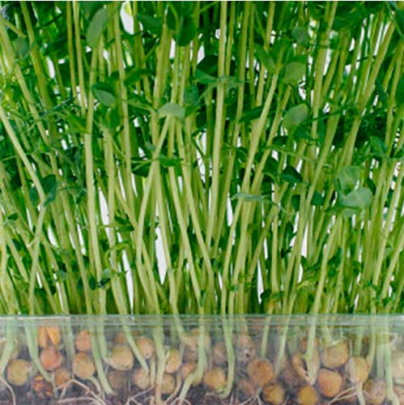

Tipos de Germinados
- 

Germinados propiamente dichos
La semilla germina, aparece la raíz y el tallos tiene la misma longitud que la semilla. La semilla es más digerible y se potencian todos sus nutrientes.
- 

Brotes
El tallo llega a unas 4 cm. La semilla empieza a perder interés como productora de nutrientes. Los nutrientes están en el tallo y hojas. Empieza el proceso de fotosíntesis.
- 

Microverdes
Los tallos de la planta llegan hasta unos 8 cm. Generalmente se utiliza tierra ya que los nutrientes presentes en la semilla se agotan en esta instancia. Se consumen antes de que aparezcan los primeros pares de hojas verdaderas. Se parece más a los vegetales de hoja que consumimos habitualmente. Al haber más fotosíntesis hay más minerales como el magnesio.